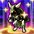
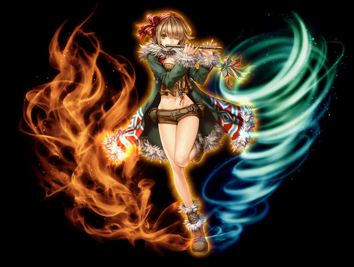
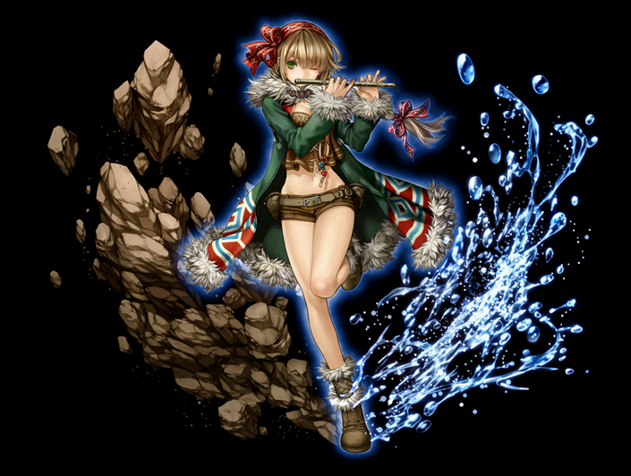

2020/04～2023/02 サマナー 覚醒スキル一覧
2018/11/7のサマナー スキル改変後のデータ。
2020/02/19 状態異常に伴うスキル改変後のデータ。
[通常スキル]
導きの楽士
太陽と風の楽士
海と大地の楽士
導きの楽士
| 導きの楽士 | |||||||
|---|---|---|---|---|---|---|---|
| [専用パッシブ] 絶対服従 | |||||||
|  | スキル説明 |
鍛え上げられた召喚能力で命令効果がペットにも影響を与える。 |
|||||
| スキル効果 |
召喚獣命令がペットにも適用。 召喚獣の物理攻撃力が150%、魔法攻撃力100%上昇、最大HP＋100%上昇 |
||||||
太陽と風の楽士
| 太陽と風の楽士 | |||||||
|---|---|---|---|---|---|---|---|
|  | |||||||
| [専用パッシブ] 火と風の祭 | |||||||
| スキル説明 |
ケルビーとウィンディーを召喚すると火と風が出会い強い火の風を起こす。魔法攻撃力とすべての攻撃範囲が上昇する。 |
||||||
| スキル効果 |
ケルビーとウィンディーを同時に召喚時に魔法攻撃力、範囲拡大効果追加 (魔法攻撃力120%増加、射程距離200増加、最大体力50%上昇) |
||||||
海と大地の楽士
| 海と大地の楽士 | |||||||
|---|---|---|---|---|---|---|---|
|  | |||||||
| [専用パッシブ] 土と水の恵み | |||||||
| スキル説明 |
大地に水が注がれて強い生命の力が生まれる。基本攻撃力と体力が上昇する。 |
||||||
| スキル効果 |
スウェルファーとヘッジャー召喚時に召喚獣基本攻撃力、体力増加効果追加 (基本攻撃力100％増加、HP100％増加、魔法攻撃力50%上昇) |
||||||